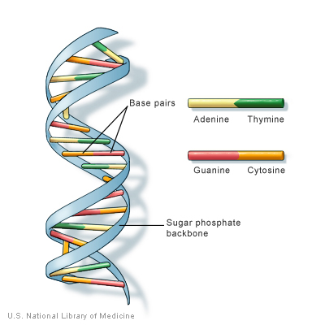

From DNA to Protein
Introduction to DNA
Content
Overview
Why do we need to learn DNA structure?
If you want to understand function, study structure.
Francis Crick
In this session, we will focus on DNA structure and touch upon the functions of DNA.
DNA Basics
What is DNA?
DNA is a molecule called Deoxyribonucleic Acid
DNA holds the information needed for an organism's growth and survival
DNA Structure: Double Helix Model
Proposed by Watson and Crick in 1953

DNA Functions
DNA = Grandma's precious old cookbook
- Full of recipes (genes) on how to make dishes
- Make a copy (mRNA) to make dishes (proteins), without damaging the original book
- Adjust the recipe slightly to your taste (mutation)
What DNA do?
- Replication: makes copies of itself
- Transcription: to make proteins
- Mutation: slight changes over time
Function 1: DNA Replication
What is DNA Replication?
Making two identical copies from one original DNA molecule
Steps:
- Helicase unwind DNA (Protein bind to the single strand to keep the DNA from recombining)
- RNA primase starts replicating at special base sequences by adding RNA primers
- DNA polymerase attaches to the RNA primers and begins elongation (Elongation = the adding of DNA nucleotides to the complement strand)
- The leading complementary strand is assembled continuously as the DNA uncoils
- The lagging complementary strand is assembled in short pieces called Okazaki fragments
- The RNA primers are replaced by DNA nucleotides
Function 1: DNA Replication (Continued)
Function 2: DNA Transcription
What is DNA Transcription?
RNA is built from a template of DNA
Central Dogma of Life
Describes the flow of genetic information from DNA to RNA to Proteins
- Proteins are the molecules that carry-out the day-to-day chores of the cell
- DNA carries the information required to properly construct the proteins
- RNA copies and carries this genetic information to the site of protein synthesis
Function 2: DNA Transcription (Video)
Function 3: DNA Mutation
What is DNA Mutation?
A mutation is a change in the sequence of an organism's DNA.
- Mutations can be caused by high-energy sources such as radiation or by chemicals in the environment.
- Mutations can also appear spontaneously during the replication of DNA
- Mutation is a key requirement for evolution
Significance of DNA Structure Discovery
Scientific Impact
- Revolutionized the study of biology and genetics
- Sheds light on the fundamentals of the manner in which living organisms maintain life
- Help us work on the biochemistry of cellular reactions
How does it affect our lives?
- Disease Diagnosis and Treatment (new drugs)
- Paternity and Legal Impact (identify child and parents)
- Crime Investigation and Victim Identification
- Agriculture
Summary
- DNA consists of four bases: A, T, G and C
- DNA is organized into two strands by the pairing of bases A to T and G to C on complementary strands
- DNA provides a template for its own replications
- DNA is the blueprint for the transcription of genes into RNA which then makes proteins
- DNA mutation can be caused by environmental agents or occur during DNA replication
- The study of DNA structure helps us visualize life at a biochemical level, and helps us to better understand how a cell functions
Science Links
-
AP Biology at MIT Free Online Course
-
Video at the DNA Learning Center
-
DNA game on Nobelprize.org
-
Build an edible DNA model
-
Easy experiment to Extract DNA at Home
Quiz
Total: questions
Your Score
Thank you!
/
#